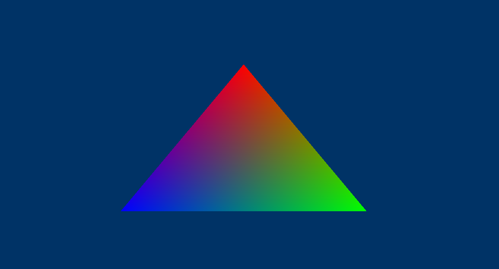

Vertex
三角形的端点。
D3D11 中的顶点可以看成是三角形的端点坐标(x, y, z)以及这些点的属性。
在D3D11中三角形是顺时针处理的。
Primitives
基元，3D环境中的一个元素, 可以是三角形、线、点或者任何其他图形。
D3D DEVICE
代表一个VideoAdapter(device要从指定的adapter上创建)。
D3D11DeviceContext
代表GPU的渲染管线.
资源和资源视图
资源是场景的构建基块：几何图形、纹理、着色器数据。
资源可以以常规用途内存格式存储，以便可以由多个管道阶段共享。 管道阶段使用视图解释资源数据。 资源视图在概念上类似于强制转换资源数据，以便它可以在特定上下文中使用。
因此, 资源不能被直接绑定到一个管线阶段, 必须为资源创建资源视图(将资源类型化)，然后绑定到管线上。
举个例子：
ID3D11Resource* backBufferResource;
hr = swap_chain_->GetBuffer(0, __uuidof(ID3D11Resource), (void**)&backBufferResource);
if (FAILED(hr)) {
LOG_ERROR("IDXGISwapChain::GetBuffer failed, err: %x", hr);
return false;
}
hr = d3d11_dev_->CreateRenderTargetView(backBufferResource, nullptr, &render_view_);
目的是将”数据”换到backbuffer上, 但是backbuffer是一个资源, 所以需要创建backbuffer的视图。通过”D3D11_RENDER_TARGET_VIEW_DESC”来描述, 这里传了nullptr(accesses all of the subresources in Mipmap level 0)Mipmap的通俗解释。
画一个三角形
- 定义VERTEX结构
struct VERTEX {
DirectX::XMFLOAT3 pos;
DirectX::XMFLOAT4 Color;
}; // a struct to define a vertex
// create a triangle using the VERTEX struct
VERTEX OurVertices[] = {
{DirectX::XMFLOAT3{0.0f, 0.5f, 0.0f}, DirectX::XMFLOAT4(1.0f, 0.0f, 0.0f, 1.0f)},
{DirectX::XMFLOAT3{0.45f, -0.5, 0.0f}, DirectX::XMFLOAT4(0.0f, 1.0f, 0.0f, 1.0f)},
{DirectX::XMFLOAT3{-0.45f, -0.5f, 0.0f}, DirectX::XMFLOAT4(0.0f, 0.0f, 1.0f, 1.0f)}};
D3D11_BUFFER_DESC bd;
ID3D11Buffer* pVBuffer = nullptr;
d3d11_dev_->CreateBuffer(&bd, NULL, &pVBuffer); // create the buffer
通过上述代码, 我们创建了一个 buffer(就是一个数据块), 那么GPU如果解析这个数据块呢?
void init() {
// 告诉GPU, 输入数据应该如何解析
const D3D11_INPUT_ELEMENT_DESC input_desc[2] = {
{"POSITION", 0, DXGI_FORMAT_R32G32B32_FLOAT, 0, 0, D3D11_INPUT_PER_VERTEX_DATA, 0},
{"COLOR", 0, DXGI_FORMAT_R32G32B32A32_FLOAT, 0, 12, D3D11_INPUT_PER_VERTEX_DATA, 0},
};
ID3D11InputLayout* layout = nullptr;
d3d11_dev_->CreateInputLayout(VERTEX::input_desc, std::size(VERTEX::input_desc),
blob->GetBufferPointer(), blob->GetBufferSize(), &layout);
d3d11_ctx_->IASetInputLayout(layout);
}
void render() {
const float clear[4] = {0.f, 0.2f, 0.4f, 1.f};
d3d11_ctx_->ClearRenderTargetView(render_target_view_, clear);
// 为什么每一帧都要绑定: see remark
// https://learn.microsoft.com/en-us/windows/win32/api/d3d11/nf-d3d11-id3d11devicecontext-omsetrendertargets
d3d11_ctx_->OMSetRenderTargets(1, render_view_.GetAddressOf(), nullptr);
// 设置顶点
UINT stride = sizeof(VERTEX);
UINT offset = 0;
d3d11_ctx_->IASetVertexBuffers(0, 1, &vertex_buffer_, &stride, &offset);
// 使用这些"Vertex"画什么形状
d3d11_ctx_->IASetPrimitiveTopology(D3D10_PRIMITIVE_TOPOLOGY_TRIANGLELIST);
// 画三个顶点, 从第0个开始
d3d11_ctx_->Draw(3, 0);
// 上屏
swapchain_->Present(0, 0);
}
